ggplot 基础
阅读信息
约 169 个字 10 分钟 本页总访问量：加载中... 次
ggplot2 基础结构
ggplot 的语法基于 图形语法 (Grammar of Graphics)：
| S | |
|---|---|
-
data：数据集 -
aes()：映射（x 轴、y 轴、颜色、大小、形状等 -
geom_xxx()：几何对象（点、线、柱状图……） -
+：叠加图层
先加载示例数据
| Text Only | |
|---|---|
1 2 3 4 5 6 7 | |
基础图形
散点图
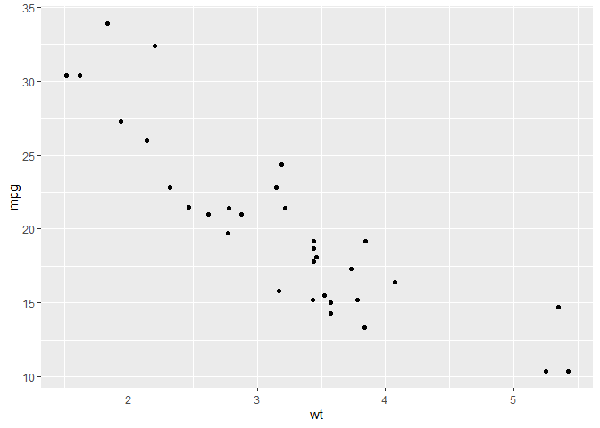
颜色、大小映射
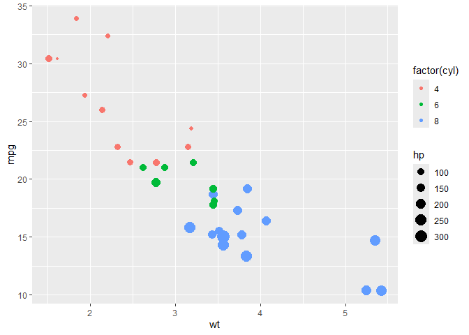
factor()基于…分类
回归线
| S | |
|---|---|
geom_smooth() using formula = 'y ~ x'

折线图
基本
| S | |
|---|---|
多组
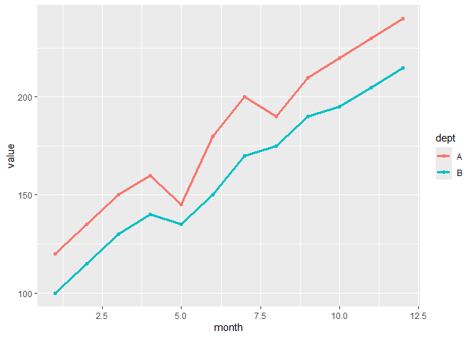
日期 (会自动优化程序包)
| S | |
|---|---|
平滑线
| S | |
|---|---|
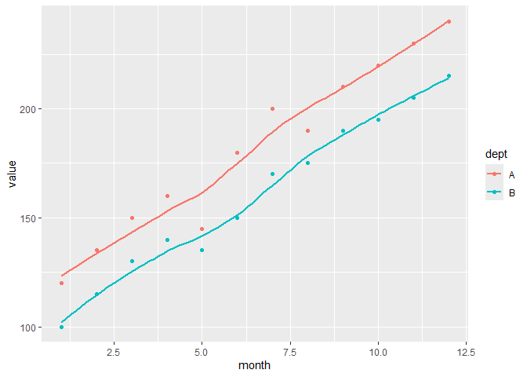
柱状 / 条形图
基本版（计数的）
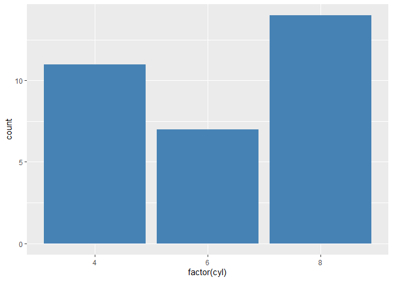横向
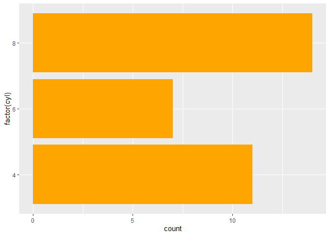直接使用值
| S | |
|---|---|
平均值
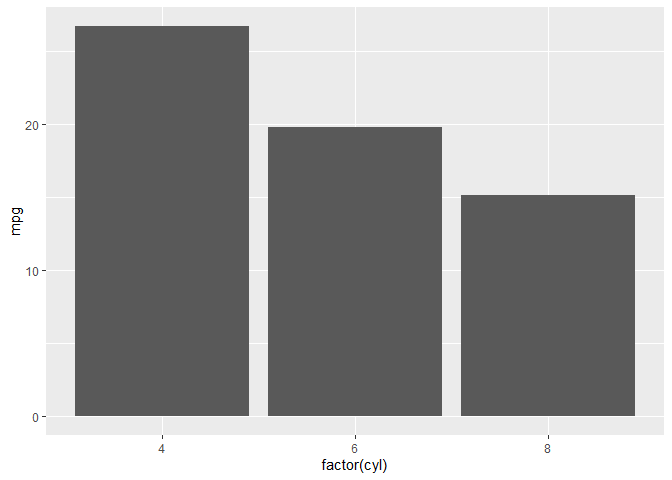分组柱状图
| S | |
|---|---|
堆叠柱状图
| S | |
|---|---|
百分比柱状图
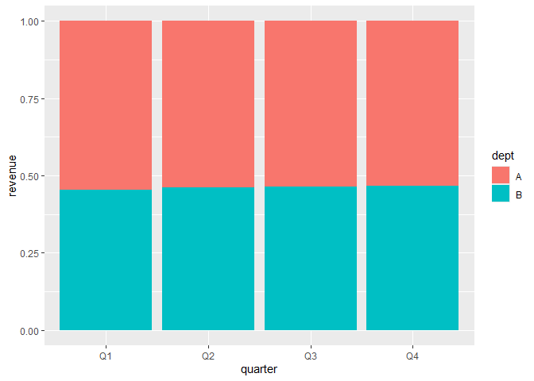箱线图
基本
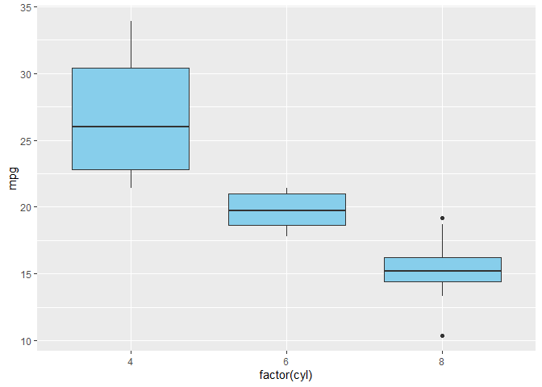| S | |
|---|---|
水平箱线图 (改 factor 为 y)
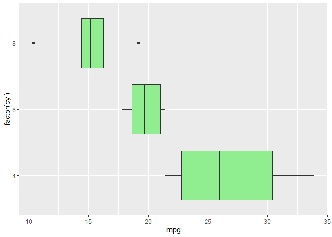小提琴图
基本
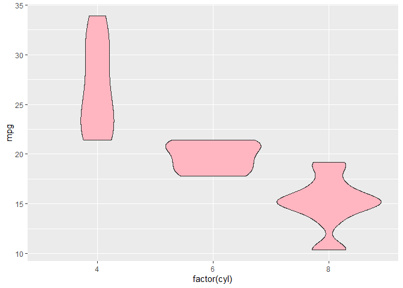加上箱线图
| S | |
|---|---|
加散点
| S | |
|---|---|
直方图
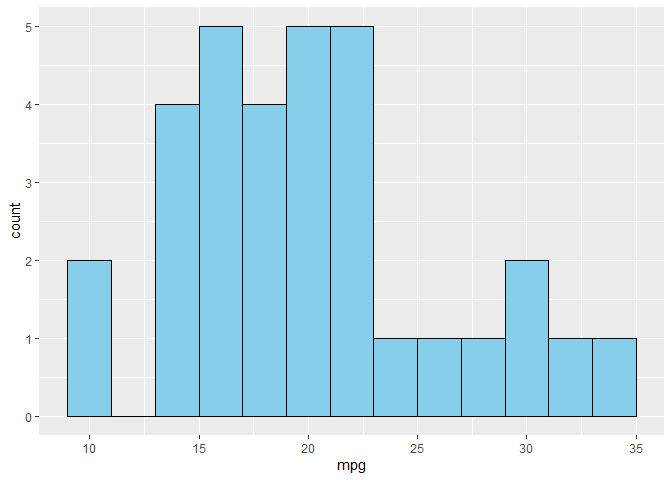密度图
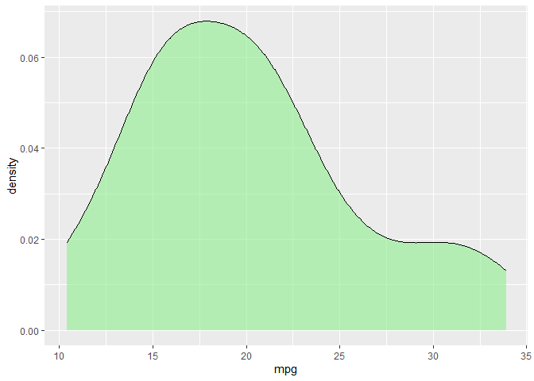面积图
| S | |
|---|---|
热力图
| S | |
|---|---|
饼图 (geom_bar + coord_polar)
| S | |
|---|---|
雷达图
使用 fmsb
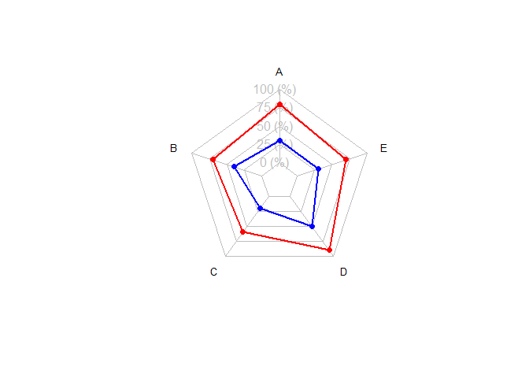